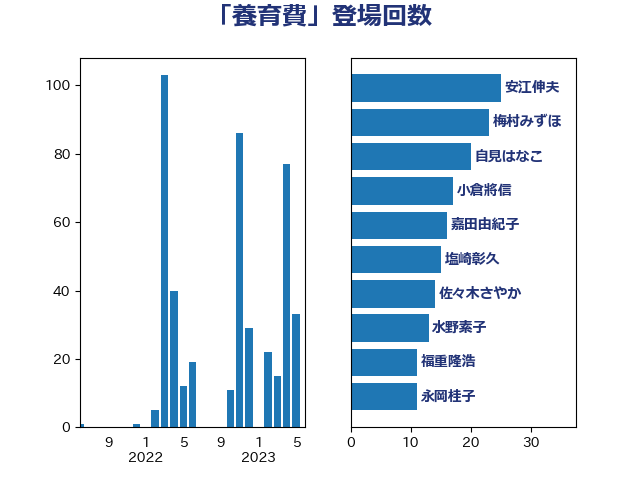

単語「養育費」

| 安江伸夫 | 公明党 | 25 回 |
| 梅村みずほ | 日本維新の会 | 23 回 |
| 自見はなこ | 自由民主党 | 20 回 |
| 小倉將信 | 自由民主党 | 17 回 |
| 嘉田由紀子 | 無所属 | 16 回 |
| 塩崎彰久 | 自由民主党 | 15 回 |
| 佐々木さやか | 公明党 | 14 回 |
| 水野素子 | 立憲民主党 | 13 回 |
| 福重隆浩 | 公明党 | 11 回 |
| 永岡桂子 | 自由民主党 | 11 回 |
| 山下貴司 | 自由民主党 | 11 回 |
| 田中昌史 | 自由民主党 | 10 回 |
| 河野義博 | 公明党 | 10 回 |
| 山田勝彦 | 立憲民主党 | 10 回 |
| 葉梨康弘 | 自由民主党 | 8 回 |
| 白石洋一 | 立憲民主党 | 7 回 |
| 川田龍平 | 立憲民主党 | 7 回 |
| 齋藤健 | 自由民主党 | 6 回 |
| 西銘恒三郎 | 自由民主党 | 6 回 |
| 田中健 | 国民民主党 | 4 回 |
| 牧原秀樹 | 自由民主党 | 4 回 |
| 柚木道義 | 立憲民主党 | 4 回 |
| 吉田はるみ | 立憲民主党 | 4 回 |
| 加田裕之 | 自由民主党 | 4 回 |
| 上月良祐 | 自由民主党 | 4 回 |
| 漆間譲司 | 日本維新の会 | 3 回 |
| 渡辺創 | 立憲民主党 | 3 回 |
| 平林晃 | 公明党 | 3 回 |
| 古庄玄知 | 自由民主党 | 3 回 |
| 古川禎久 | 自由民主党 | 3 回 |
| 前川清成 | 日本維新の会 | 3 回 |
| 長妻昭 | 立憲民主党 | 2 回 |
| 横沢高徳 | 立憲民主党 | 2 回 |
| 森山浩行 | 立憲民主党 | 2 回 |
| 岸田文雄 | 自由民主党 | 2 回 |
| 山田太郎 | 自由民主党 | 2 回 |
| 宮崎勝 | 公明党 | 2 回 |
| 吉川赳 | 無所属 | 2 回 |
| 豊田俊郎 | 自由民主党 | 1 回 |
| 西田実仁 | 公明党 | 1 回 |
| 窪田哲也 | 公明党 | 1 回 |
| 穂坂泰 | 自由民主党 | 1 回 |
| 田村智子 | 日本共産党 | 1 回 |
| 牧山ひろえ | 立憲民主党 | 1 回 |
| 浜田聡 | NHK党 | 1 回 |
| 河野太郎 | 自由民主党 | 1 回 |
| 櫻井周 | 立憲民主党 | 1 回 |
| 打越さく良 | 立憲民主党 | 1 回 |
| 山添拓 | 日本共産党 | 1 回 |
| 小野田紀美 | 自由民主党 | 1 回 |
| 堀場幸子 | 日本維新の会 | 1 回 |
| 城井崇 | 立憲民主党 | 1 回 |
| 國重徹 | 公明党 | 1 回 |
| 吉田とも代 | 日本維新の会 | 1 回 |
| 中田宏 | 自由民主党 | 1 回 |